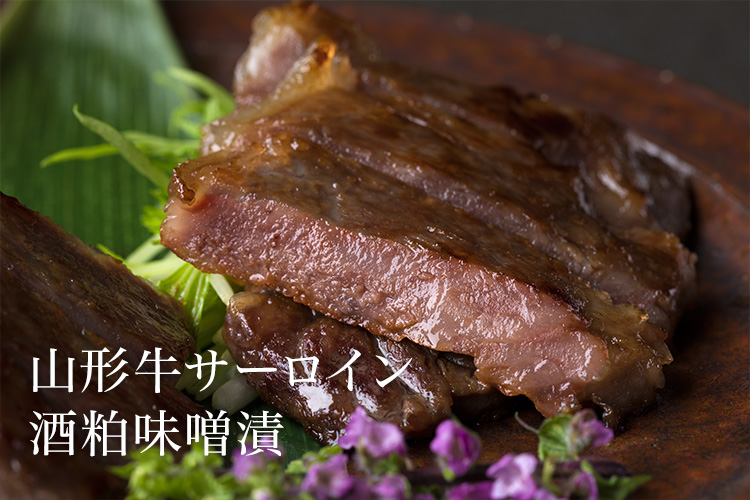
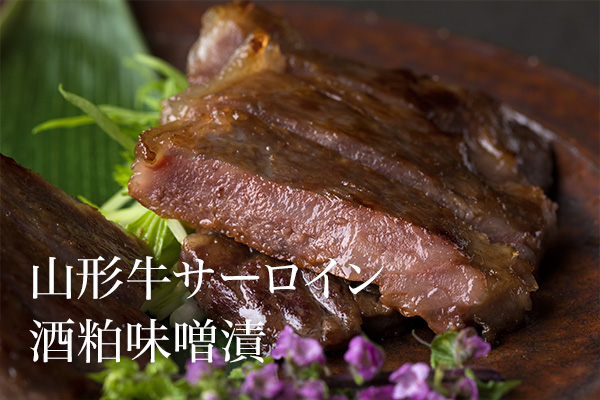
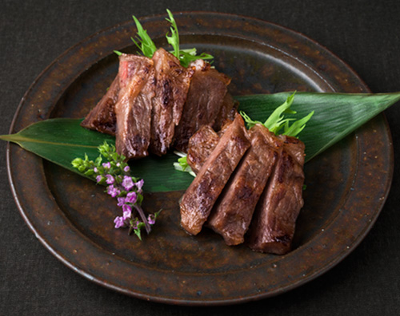
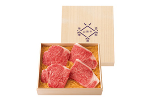

リンベルが日本一と認めた「極みの味」
山形が生んだ極上の牛サーロイン酒粕味噌漬


ここが「極み」
- 贅沢に使った厚切りのサーロイン
- 山形が誇る『出羽桜酒造』の「大吟醸酒粕」酒粕と老舗の味噌を配合した
サーロインの旨みをあまねく引き出す独自の酒粕
スタッフ＆お客様の声
お客様の声
- 香ばしくて甘い酒粕・味噌の味が口に広がり、その後に山形牛の脂甘い香りが鼻に抜けていきます。
肉厚サーロインの食べ応えも最高！ごはんのおかわりが止まりません。 - 50代 男性
- 和牛の脂身のおいしさを再認識しました。
サッパリしてるけど、白米とも合うしっかりした味わいですね。 - 40代 男性
- 酒粕の香りが芳醇。
塩味も丁度良く、薬味を添えたら尚さっぱりして、お箸が止まりません。 - 30代 女性
- 冷めても美味しいので、お弁当にもいいかも。
酒粕味噌の味つけがとても上品、甘すぎず、しょっぱすぎず美味しい。 - 50代 女性
商品のこだわりポイント
極上の山形牛のサーロインの旨みを引き出す極みの酒粕味噌漬

漬かり具合で、お好みの味や風味が楽しめる、山形牛の味噌漬。
その起源は、今のように冷蔵技術が高くなかった明治時代、山形牛の美味を東京に届けるため、保存の目的で考え出されたのが、その始まりです。
今回ご紹介する「山形牛サーロイン酒粕味噌漬」はまさに、その極みの逸品。
厳選した、味わい豊かな山形牛の厚切りサーロイン部位を酒粕味噌漬にしてお届けします。
贅沢な山形牛サーロインを漬け込む、酒粕味噌にも徹底してこだわり、酒粕は、創業明治25年の老舗酒造『出羽桜酒造』の最高峰、芳醇な香りを持つ「大吟醸酒粕」を、味噌には、深い旨みが特徴の安政7年創業の『紅谷醸造場』の味噌を選択し、サーロインの旨みをあまねく引き出すための独自の配合を行った、ここだけのものを使用しています。
食べ応えたっぷりの厚切りの山形牛のサーロインが4枚入っていますので、漬かり具合で変化する味を贅沢にお楽しみいただけます。
ご注文はこちら
-
